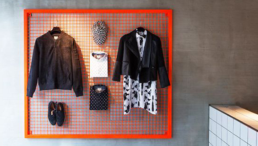

駭遠銀盜走18億 斯里蘭卡國企負責人幹的
〔即時新聞／綜合報導〕遠東商銀遭駭客入侵，被轉走約6010萬美元（約新台幣18億餘元），部分贓款被匯入斯里蘭卡銀行帳戶。當地警方逮捕1名私人帳戶名為J.C. Nammuni的嫌犯，還有1名在逃嫌犯，傳出是斯里蘭卡國營企業負責人。

據當地媒體《News First》報導，有110萬美元（約新台幣3300萬元）被匯進J.C. Nammuni帳戶，帳戶持有者在10月4日領取3000萬盧比（約新台幣1400萬元），緊接著在10月6日嫌犯想要在錫蘭銀行（Bank of Ceylon）領出800萬盧比（約新台幣373萬元）時，當場被斯里蘭卡警方逮捕。
然而，陪同在J.C. Nammuni身邊的人卻逃之夭夭。資深官員透露，該名逃亡嫌犯是斯里蘭卡國營企業負責人，當地移民局已發布境管，防止逃犯離開斯里蘭卡。此外J.C. Nammuni的辦公室也搜出400萬盧比（約新台幣186萬元）。
事實上，類似事件於2016年2月就曾發生，當時紐約聯邦儲備銀行的1個孟加拉帳戶，被試圖轉走10億美元（約新台幣300億元）。過程中有2000萬美元（約新台幣6億元），將被轉入至斯里蘭卡銀行的Shalika基金會帳戶。不過，當德商德意志銀行在處理時，發現轉帳程序有誤，就此揭發這種駭客手段。
駭客犯案手法，是寄送電子郵件給特定銀行職員，當員工點開藏有惡意軟體的郵件後，SWIFT系統就會被滲透，讓駭客得以偽造銀行與銀行間的匯款交易。雖然有些匯款被拒絕，但匯款一旦遭到批准後，駭客就將鉅額款項轉入他們所選擇的帳戶。此外，駭客也能迅速抹除系統發布的警報。